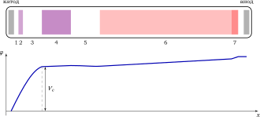
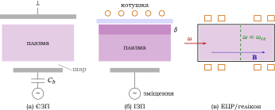

Елементи фізики плазми
11 Низькотемпературна плазма та газовий розряд
Більшість плазм, з якими людина має справу щодня, зовсім не гарячі: це полум’я дуги зварювального апарата, світіння люмінесцентної лампи, плазма в реакторі, що витравлює транзистори на кремнієвій пластині. Це низькотемпературна плазма: електрони мають \(T_e\sim 1\)–\(10\) еВ, а іони та нейтральний газ лишаються майже холодними, \(T_i\approx T_g\sim 0{,}03\)–\(0{,}1\) еВ. Ступінь іонізації (1.1) малий, \(10^{-6}\)–\(10^{-2}\), густина \(n_e\sim 10^{8}\)–\(10^{12}~\mathrm {см}^{-3}\). Така плазма нерівноважна: формула Саха (1.2) до неї не застосовна, бо електрони нагріває зовнішнє поле, а енергію вони віддають нейтральному газу повільно (у пружному зіткненні електрон передає атому лише частку \(\sim 2m/M\sim 10^{-4}\) своєї енергії). Плазма живе доти, доки поле підтримує іонізацію, яка компенсує втрати заряджених частинок на стінки. Цей баланс і є предметом фізики газового розряду.
У розділі ми побачимо, як виникає розряд (пробій Таунсенда і закон Пашена), як влаштовані тліючий розряд і дуга, що визначає температуру електронів і густину плазми (глобальна модель), і як працюють сучасні високочастотні джерела плазми для мікроелектроніки. Детальний виклад є в [12, 14, 5].
§ 11.1 Елементарні процеси: іонізація і її швидкість
Основний процес, що підтримує розряд, — іонізація електронним ударом \(e+A\to A^++2e\). Вона можлива, лише якщо енергія електрона \(\varepsilon \) перевищує потенціал іонізації \(\varepsilon _{iz}\) (\(13{,}6\) еВ для H, \(15{,}8\) еВ для Ar, \(24{,}6\) еВ для He). Класична оцінка Томсона (електрон передає атомному електрону енергію \(\Delta \varepsilon \) у кулонівському зіткненні, а іонізація відбувається при \(\Delta \varepsilon >\varepsilon _{iz}\)) дає переріз
\(\seteqnumber{0}{11.}{0}\)\begin{equation} \label {eq:thomson-iz} \sigma _{iz}(\varepsilon )=\frac {\pi e^4}{\varepsilon }\left (\frac 1{\varepsilon _{iz}}-\frac 1\varepsilon \right ), \qquad \varepsilon >\varepsilon _{iz}. \end{equation}
Переріз лінійно зростає від порога, досягає максимуму \(\sigma _{\max }=\pi e^4/(4\varepsilon _{iz}^2)\) при \(\varepsilon =2\varepsilon _{iz}\) (для Ar \(\approx 3\times 10^{-16}~\mathrm {см}^2\), тобто порядку газокінетичного) і далі спадає як \(1/\varepsilon \). Поряд з іонізацією відбуваються збудження атомів (саме воно дає світіння розряду), пружні зіткнення, а в електронегативних газах (\(\mathrm {O_2}\), \(\mathrm {SF_6}\), \(\mathrm {CF_4}\)) — ще й прилипання \(e+\mathrm {AB}\to \mathrm A+\mathrm B^-\).
Кількість іонізацій в одиниці об’єму за одиницю часу дорівнює \(n_en_gk_{iz}\), де \(n_g\) — густина газу, а константа швидкості \(k_{iz}=\langle \sigma _{iz}v\rangle \) усереднена за розподілом електронів. Для максвеллівських електронів з \(T_e\ll \varepsilon _{iz}\) іонізують лише електрони з хвоста розподілу. Якщо поблизу порога \(\sigma _{iz}\approx C(\varepsilon -\varepsilon _{iz})\), то (задача 11.1)
\(\seteqnumber{0}{11.}{1}\)\begin{equation} \label {eq:kiz} \tcbhighmath {k_{iz}(T_e)=C\bar v_e\,(\varepsilon _{iz}+2T_e)\,e^{-\varepsilon _{iz}/T_e},\qquad \bar v_e=\sqrt {\frac {8T_e}{\pi m}}.} \end{equation}
Головне в (11.2) — арреніусівський множник \(e^{-\varepsilon _{iz}/T_e}\). Для аргону добре працює апроксимація \(k_{iz}\approx 2{,}3\times 10^{-8}\,T_e^{0{,}59}e^{-17{,}4/T_e}~\mathrm {см}^3/\mathrm {с}\) (\(T_e\) в еВ) [12].
Числова оцінка. При \(T_e=2\) еВ \(k_{iz}\approx 6\times 10^{-12}~\mathrm {см}^3/\mathrm {с}\), а при \(T_e=4\) еВ уже \(\approx 7\times 10^{-10}~\mathrm {см}^3/\mathrm {с}\). Подвоєння температури збільшує швидкість іонізації більш ніж у сто разів.
Через таку різку залежність \(T_e\) у розряді ледь змінюється (див. розд. 11.5): невелика зміна \(T_e\) компенсує зміну втрат у кілька разів.
Оцінка. Втрати енергії електрона в пружних зіткненнях малі (\(2m/M\) за зіткнення), тому основний «стік» енергії електронів — непружні процеси. На одну іонізацію в аргоні при \(T_e\sim 3\) еВ припадає кілька збуджень, і повна енергія, яку витрачає електронний газ на створення однієї пари електрон–іон, становить \(\varepsilon _c\approx 50\)–\(60\) еВ, у кілька разів більше за \(\varepsilon _{iz}\). Більша частина цієї енергії виходить з плазми у вигляді випромінювання.
§ 11.2 Пробій газу: механізм Таунсенда і закон Пашена
Нехай між плоскими електродами на відстані \(d\) прикладено напругу \(V\), поле \(E=V/d\). Випадковий вільний електрон (від космічного випромінювання чи фотоефекту) прискорюється до анода і іонізує газ. Число іонізацій на одиницю довжини шляху — перший коефіцієнт Таунсенда \(\alpha \). Оцінимо його. Між зіткненнями електрон проходить у середньому \(\lambda =1/(n_g\sigma )\propto 1/p\) і набирає енергію \(eE\lambda \). Імовірність пройти без зіткнення відстань \(\varepsilon _{iz}/(eE)\), потрібну для набору енергії іонізації, дорівнює \(\exp [-\varepsilon _{iz}/(eE\lambda )]\); зіткнень на одиницю довжини \(1/\lambda \). Отже,
\(\seteqnumber{0}{11.}{2}\)\begin{equation} \label {eq:townsend-alpha} \alpha =Ap\,\exp \left (-\frac {Bp}{E}\right ),\qquad A=\frac 1{\lambda p},\quad B=\frac {\varepsilon _{iz}A}{e}, \end{equation}
де \(A\) і \(B\) — сталі газу (на практиці їх беруть з експерименту: для повітря \(A\approx 15~\mathrm {см}^{-1}\mathrm {Торр}^{-1}\), \(B\approx 365\) В/(см\(\,\cdot \,\)Торр); для аргону \(A\approx 12\), \(B\approx 180\)). Важливо, що \(\alpha /p\) залежить лише від \(E/p\) — енергії, набраної на довжині пробігу.
Один електрон, що вилетів з катода, дає на аноді лавину \(e^{\alpha d}\) електронів; утворені \(e^{\alpha d}-1\) іонів повертаються на катод і вибивають з нього \(\gamma (e^{\alpha d}-1)\) нових електронів, де \(\gamma \sim 10^{-2}\)–\(10^{-1}\) — коефіцієнт вторинної емісії (другий коефіцієнт Таунсенда). Якщо кожен вихідний електрон відтворює хоча б одного наступника, розряд стає самостійним і не потребує зовнішнього іонізатора:
\(\seteqnumber{0}{11.}{3}\)\begin{equation} \label {eq:townsend-criterion} \gamma \left (e^{\alpha d}-1\right )=1\quad \Longleftrightarrow \quad \alpha d=\ln \left (1+\frac 1\gamma \right ). \end{equation}
Підставивши (11.3) з \(E=V/d\), отримуємо напругу пробою — закон Пашена:
\(\seteqnumber{0}{11.}{4}\)\begin{equation} \label {eq:paschen} \tcbhighmath {V_b=\frac {B\,pd}{\ln (A\,pd)-\ln \ln (1+1/\gamma )}.} \end{equation}
Напруга пробою залежить не від \(p\) і \(d\) окремо, а лише від добутку \(pd\) (закон подібності). Крива Пашена (рис. 11.1) має мінімум при \((pd)_{\min }=e\ln (1+1/\gamma )/A\), де \(V_{\min }=B\,(pd)_{\min }\) (задача 11.2); для повітря \(V_{\min }\approx 300\) В при \(pd\approx 0{,}8\) Торр\(\,\cdot \,\)см. Праворуч від мінімуму електрон зазнає багато зіткнень, але за одне зіткнення набирає замало енергії, тому потрібне сильне поле. Ліворуч від мінімуму зіткнень замало, щоб розвинулася лавина: електрон долітає до анода, майже нікого не іонізувавши. Звідси практичні наслідки: повітряний проміжок \(1\) см при атмосферному тиску (\(pd=760\) Торр\(\,\cdot \,\)см) пробивається при \(\approx 30\) кВ; вакуумні вимикачі і високовольтні вводи працюють на лівій гілці, а пробій усередині тонкої трубки при низькому тиску може піти «довгим шляхом» уздовж трубки, а не коротким поперек.

Механізм Таунсенда описує пробій, поки лавина не спотворює зовнішнього поля. При \(pd\gtrsim 200\) Торр\(\,\cdot \,\)см (довгі іскри, блискавка) просторовий заряд головки лавини сам створює поле, порівнянне з прикладеним. Тоді розряд поширюється як стример — тонкий іонізаційний фронт, що рухається зі швидкістю \(10^{7}\)–\(10^{8}\) см/с і підживлюється фотоіонізацією перед головкою, а катод і коефіцієнт \(\gamma \) ролі вже не грають.
§ 11.3 Тліючий розряд і дуга
Після пробою при обмеженому струмі (зовнішній резистор) встановлюється тліючий розряд. Його найпомітніша риса — шарувата будова (рис. 11.2). Біля катода лежить катодне падіння: шар завтовшки в кілька довжин пробігу, на якому спадає майже вся напруга, \(V_c\sim 100\)–\(400\) В (порядку \(V_{\min }\) кривої Пашена). У ньому іони прискорюються до катода, вибивають вторинні електрони, і ті розмножуються лавиною, як у механізмі Таунсенда. Прискорені електрони виходять із шару в негативне світіння — область майже без поля, де вони втрачають енергію на збудження та іонізацію. Далі, у фарадеєвому темному просторі, швидких електронів уже немає, а поле ще мале. Решту проміжку до анода заповнює позитивний стовп — однорідна квазінейтральна плазма зі слабким поздовжнім полем \(E\sim 1\)–\(10\) В/см.

Позитивний стовп: температура з балансу частинок
Позитивний стовп — найпростіший приклад самоузгодженої плазми. Заряджені частинки дифундують до стінок трубки радіуса \(R\) амбіполярно (розд. 4.4) і там рекомбінують; втрати компенсує іонізація в об’ємі. Рівняння неперервності для густини, \(D_a\nabla ^2n+n_gk_{iz}n=0\), з умовою \(n(R)\approx 0\) має розв’язок \(n(r)=n_0J_0(2{,}405\,r/R)\) і дає умову Шотткі
\(\seteqnumber{0}{11.}{5}\)\begin{equation} \label {eq:schottky} n_gk_{iz}(T_e)=D_a\left (\frac {2{,}405}{R}\right )^2,\qquad D_a\approx \frac {T_e}{M\nu _{in}}. \end{equation}
Тут \(D_a\approx D_i(1+T_e/T_i)\approx T_e/(M\nu _{in})\) з (4.7), а \(\nu _{in}\propto n_g\) — частота зіткнень іонів з атомами. Оскільки \(n_g\propto p\), умова (11.6) пов’язує \(T_e\) лише з параметром подібності \(pR\): густина плазми з неї випадає зовсім. Температуру електронів задає геометрія і тиск, а струм розряду (через баланс енергії) визначає лише густину. Зі зменшенням \(pR\) дифузійні втрати зростають, і \(T_e\) зростає, щоб іонізація встигала їх компенсувати. Цю ж логіку ми повторимо в глобальній моделі (розд. 11.5).
Вольт-амперна характеристика і дуга
Зі зростанням струму розряд проходить кілька режимів. При малих струмах (\(\lesssim 10^{-6}\) А) горить темний таунсендівський розряд. Далі напруга стрибком падає до значення нормального тліючого розряду. У ньому катодне падіння і густина струму на катоді сталі (\(j/p^2=\mathrm {const}\)), а зростання струму лише збільшує вкриту світінням площу катода. Коли світіння вкриває весь катод, настає аномальний тліючий розряд: щоб збільшити струм, треба підвищувати \(V_c\). При струмах \(\gtrsim 1\) А іонне бомбардування розігріває катод до термоемісії (або на ньому утворюються мікроскопічні катодні плями з автоемісією), і розряд переходить у дугу. Катодне падіння в дузі лише \(\sim 10\) В, бо електрони емітує сам гарячий катод, а не вибивають іони. Напруга на дузі падає зі зростанням струму, тобто дуга має спадну характеристику, тому без баластного опору вона нестійка. Дуга атмосферного тиску (зварювання, плазмотрони, вимикачі) близька до локальної термодинамічної рівноваги: \(T_e\approx T_i\approx T_g\sim 1\) еВ, бо часті зіткнення вирівнюють температури, і до неї вже можна застосувати формулу Саха.
§ 11.4 Приелектродний шар у розряді
Будь-яка розрядна плазма відділена від стінок і електродів шаром позитивного просторового заряду. Його структуру для малого перепаду потенціалу ми вже розглянули (розд. 1.9): іони входять у шар зі швидкістю Бома \(u_B=\sqrt {T_e/M}\) (1.20), а густина на межі шару внаслідок прискорення в передшарі становить \(n_s\approx e^{-1/2}n_0\approx 0{,}6\,n_0\). Отже, потік іонів на поверхню
\(\seteqnumber{0}{11.}{6}\)\begin{equation} \label {eq:bohm-flux} \Gamma _i\approx 0{,}6\,n_0u_B \end{equation}
не залежить від потенціалу поверхні: його задає плазма, а не стінка. Ця обставина лежить в основі всієї технології плазмової обробки.
На ізольовану стінку іони падають з енергією \(e|\Delta \varphi _f|+T_e/2\), де \(\Delta \varphi _f\) — плаваючий потенціал (1.21); для аргону це \(\approx 5{,}2\,T_e\), тобто \(\sim 15\) еВ. Щоб отримати іони з енергією в сотні електронвольт, на електрод подають великий від’ємний потенціал \(-V_0\), \(eV_0\gg T_e\). Тоді електрони в шарі практично відсутні, і шар містить лише іони, що прискорюються. Нехай \(\Phi (x)>0\) — спад потенціалу від межі шару (\(x=0\)) вглиб, \(J=en_iv_i\) — стала густина іонного струму, \(v_i=\sqrt {2e\Phi /M}\) (початковою швидкістю \(u_B\) нехтуємо). Рівняння Пуассона
\(\seteqnumber{0}{11.}{7}\)\begin{equation*} \frac {d^2\Phi }{dx^2}=4\pi en_i=\frac {4\pi J}{\sqrt {2e\Phi /M}} \end{equation*}
після множення на \(d\Phi /dx\) і інтегрування з \(\Phi =\Phi '=0\) при \(x=0\) дає \(\Phi ^{3/4}\propto x\), а умова \(\Phi (s)=V_0\) на електроді — закон Чайлда–Ленгмюра:
\(\seteqnumber{0}{11.}{7}\)\begin{equation} \label {eq:child-langmuir} \tcbhighmath {J=\frac 1{9\pi }\sqrt {\frac {2e}{M}}\,\frac {V_0^{3/2}}{s^2}.} \end{equation}
Той самий закон «трьох других» обмежує струм електронів у вакуумному діоді (з заміною \(M\to m\)). У плазмі струм \(J\) задано наперед потоком Бома, \(J=e\,n_su_B\), тож (11.8) визначає не струм, а товщину шару:
\(\seteqnumber{0}{11.}{8}\)\begin{equation} \label {eq:sheath-thickness} s=\frac {\sqrt 2}{3}\,r_D\left (\frac {2eV_0}{T_e}\right )^{3/4}, \end{equation}
де \(r_D\) — дебаївський радіус (1.10) при густині \(n_s\). Шар під високою напругою в десятки разів товщий за дебаївський: при \(T_e=3\) еВ, \(n_s=10^{10}~\mathrm {см}^{-3}\) і \(V_0=300\) В маємо \(r_D\approx 0{,}13\) мм і \(s\approx 3\) мм (задача 11.3).
Енергія іонів на поверхні. Якщо шар беззіткненнєвий (\(\lambda _i\gg s\)), кожен іон приходить на електрод з енергією \(eV_0\), а розподіл за енергіями вузький. Кут розходження визначає відношення поперечної теплової швидкості до набраної в шарі: \(\theta \approx \sqrt {T_i/(2eV_0)}\sim 1^\circ \). Саме цей майже нормальний пучок іонів робить можливим анізотропне травлення (розд. 11.7). Якщо ж \(\lambda _i<s\) (тиск \(\gtrsim 100\) мТорр), іони перезаряджаються в шарі, і їхній енергетичний спектр розмивається в бік малих енергій, а кутовий розширюється.
§ 11.5 Глобальна модель розряду
Як для заданого джерела (газ, тиск, розміри, потужність) оцінити \(T_e\) і \(n_0\), не розв’язуючи рівнянь переносу? Глобальна модель усереднює плазму за об’ємом \(V\) і записує два балансові співвідношення.
Баланс частинок. Іонізація в об’ємі компенсує потік Бома на поверхню площею \(A\):
\(\seteqnumber{0}{11.}{9}\)\begin{equation*} n_gk_{iz}n_0V=n_0u_BA_{\rm eff}, \end{equation*}
де ефективна площа \(A_{\rm eff}=h A\) враховує, що густина біля стінки менша, ніж у центрі (при низькому тиску \(h\sim 0{,}3\)–\(0{,}5\), з ростом тиску \(h\) спадає як \(\lambda _i^{1/2}\)). Густина \(n_0\) скорочується, і ми отримуємо рівняння лише для \(T_e\):
\(\seteqnumber{0}{11.}{9}\)\begin{equation} \label {eq:global-te} \tcbhighmath {\frac {k_{iz}(T_e)}{u_B(T_e)}=\frac 1{n_gd_{\rm eff}},\qquad d_{\rm eff}=\frac V{A_{\rm eff}}.} \end{equation}
Це той самий висновок, що й для позитивного стовпа: температуру електронів задає баланс частинок, вона залежить тільки від \(n_gd_{\rm eff}\) і не залежить від потужності. Через арреніусівську залежність \(k_{iz}(T_e)\) розв’язок лежить у вузькій смузі \(T_e\approx 2\)–\(5\) еВ майже для всіх джерел: малі розряди при низькому тиску мають вищу \(T_e\), великі при високому — нижчу.
Баланс енергії. Кожна пара електрон–іон, що покидає плазму, забирає енергію
\(\seteqnumber{0}{11.}{10}\)\begin{equation} \label {eq:energy-per-pair} \mathcal E_T=\varepsilon _c+2T_e+\varepsilon _i, \end{equation}
де \(\varepsilon _c\) — енергія, витрачена в зіткненнях на створення пари (розд. 11.1), \(2T_e\) — середня кінетична енергія електрона, що долає потенціальний бар’єр шару (потік через бар’єр збагачений швидкими частинками), а \(\varepsilon _i\approx e\Delta \varphi +T_e/2\) — енергія, яку іон набирає в передшарі й шарі. Поглинена плазмою потужність \(P_{\rm abs}\) виходить з неї разом з потоком частинок: \(P_{\rm abs}=e\,n_0u_BA_{\rm eff}\,\mathcal E_T\) (тут \(\mathcal E_T\) у вольтах). Звідси
\(\seteqnumber{0}{11.}{11}\)\begin{equation} \label {eq:global-n} \tcbhighmath {n_0=\frac {P_{\rm abs}}{e\,u_BA_{\rm eff}\,\mathcal E_T}.} \end{equation}
Густина пропорційна потужності, а \(T_e\) від неї не залежить — розподіл ролей, підтверджений вимірюваннями в багатьох джерелах.
Числова оцінка. Аргон, \(p=10\) мТорр (\(n_g\approx 3{,}2\times 10^{14}~\mathrm {см}^{-3}\) при кімнатній температурі), \(d_{\rm eff}=10\) см. Тоді \(n_gd_{\rm eff}\approx 3{,}2\times 10^{15}~\mathrm {см}^{-2}\), і розв’язок (11.10) дає \(T_e\approx 2{,}8\) еВ (\(u_B\approx 2{,}6\times 10^5\) см/с). При \(\varepsilon _c\approx 60\) еВ і \(\varepsilon _i\approx 5{,}2\,T_e\) маємо \(\mathcal E_T\approx 80\) еВ, і потужність \(500\) Вт на \(A_{\rm eff}=10^3~\mathrm {см}^2\) підтримує \(n_0\approx 1{,}5\times 10^{11}~\mathrm {см}^{-3}\) (задача 11.4). Це типові параметри індуктивного джерела.
§ 11.6 Високочастотні джерела плазми
Розряд постійного струму має два недоліки: електроди контактують з плазмою (і розпорошуються), а на діелектричних поверхнях (пластина з оксидом) накопичується заряд. Тому в технології використовують високочастотні (ВЧ) розряди. Стандартна частота \(13{,}56\) МГц лежить між іонною і електронною плазмовими частотами: \(\omega _{pi}<\omega \ll \omega _{pe}\). Електрони миттєво відстежують поле, а іони реагують лише на усереднений за періодом потенціал шару. Основні типи джерел показано на рис. 11.3, їхні параметри порівняно в табл. 11.1.

Ємнісний розряд
У ємнісно-зв’язаній плазмі (ЄЗП) ВЧ-напругу подають на один з двох плоских електродів через розділювальний конденсатор. Плазма має потенціал, вищий за потенціал обох електродів, тож біля кожного утворюється шар, товщина якого коливається з частотою поля. Електрони нагріваються омічно (зіткнення в об’ємі) і стохастично: вони відбиваються від рухомої межі шару, як м’ячик від ракетки, і набирають енергію. Оскільки електрони значно рухливіші за іони, сумарний струм на електрод за період може дорівнювати нулю лише за умови, що конденсатор зарядиться і на електроді виникне від’ємне автозміщення. Якщо площі електродів різні, більший спад напруги припадає на шар біля меншого електрода: \(V_1/V_2\approx (A_2/A_1)^q\), ідеалізована модель дає \(q=4\), а на практиці \(q\approx 1\)–\(2\). Тому пластину кладуть на менший (ВЧ) електрод, а більшим є заземлені стінки камери. Головна вада ЄЗП: однією напругою визначаються і густина плазми (\(n\sim 10^{9}\)–\(10^{10}~\mathrm {см}^{-3}\)), і енергія іонів (сотні еВ), тож незалежно керувати ними неможливо. Частковий вихід дають двочастотні ЄЗП (десятки МГц для густини, \(\sim 2\) МГц для енергії іонів).
Індуктивний розряд
У індуктивно-зв’язаній плазмі (ІЗП) ВЧ-струм тече в котушці над діелектричним вікном. Змінне магнітне поле котушки наводить у плазмі вихрове електричне поле \(E_\theta \), яке нагріває електрони, як вторинну обмотку трансформатора. Поле проникає в плазму лише на глибину скін-шару: у беззіткненнєвому випадку з провідності (4.3) при \(\nu \ll \omega \) \(\delta =c/\omega _{pe}\), для \(n=10^{11}~\mathrm {см}^{-3}\) \(\delta \approx 1{,}7\) см. Тут немає високовольтних шарів біля котушки, тож густина вища (\(10^{11}\)–\(10^{12}~\mathrm {см}^{-3}\) при \(1\)–\(50\) мТорр), а енергією іонів керує окреме ВЧ-зміщення столика з пластиною. При малій потужності ІЗП працює в ємнісному режимі (E-режим) через напругу на котушці і зі зростанням потужності стрибком переходить в індуктивний (H-режим) з густиною на порядок вищою.
ЕЦР- і геліконні джерела
У магнітному полі \(B\) мікрохвилі поглинаються резонансно, де \(\omega =\omega _{ce}\) (розд. 6.7). Для стандартної частоти \(2{,}45\) ГГц резонансне поле \(B=875\) Гс. Звичайна хвиля не проходить у плазму з густиною, вищою за критичну \(n_c=m\omega ^2/(4\pi e^2)\approx 7{,}4\times 10^{10}~\mathrm {см}^{-3}\), а права поляризована хвиля, введена з боку сильного поля (\(\omega <\omega _{ce}\)), поширюється як свистова хвиля (6.14) і не має обмеження за густиною, доки не дійде до резонансу. Так ЕЦР-джерело дає \(n\sim 10^{11}\)–\(10^{12}~\mathrm {см}^{-3}\) при тиску лише \(0{,}1\)–\(1\) мТорр.
Геліконне джерело використовує ту саму свистову гілку на ВЧ-частотах (\(\omega _{ci}\ll \omega \ll \omega _{ce}\)) в обмеженому циліндрі. При \(\omega _{pe}^2\gg \omega \omega _{ce}\) закон дисперсії свистової хвилі, що поширюється під кутом \(\theta \) до поля, \(c^2k^2/\omega ^2\approx \omega _{pe}^2/(\omega \omega _{ce}\cos \theta )\), з \(k\cos \theta =k_z\) набуває вигляду
\(\seteqnumber{0}{11.}{12}\)\begin{equation} \label {eq:helicon} kk_z=\frac {\omega \,\omega _{pe}^2}{\omega _{ce}c^2}=\frac {4\pi ne\,\omega }{Bc} \quad \Longrightarrow \quad n=\frac {Bkk_zc}{4\pi e\omega }. \end{equation}
При фіксованій антені (задані \(k_z\) і поперечне \(k_\perp \approx 3{,}83/a\)) густина плазми, в якій хвиля резонансно «вписується» у трубку радіуса \(a\), пропорційна полю \(B\). Геліконні джерела дають рекордні для ВЧ-розрядів густини \(\sim 10^{13}~\mathrm {см}^{-3}\) (задача 11.6).
| Джерело |
\(p\), мТорр |
\(n\), \(\mathrm {см}^{-3}\) |
\(T_e\), еВ |
Енергія іонів |
|
Тліючий (пост. струм) |
\(10^{2}\)–\(10^{4}\) |
\(10^{9}\)–\(10^{11}\) |
\(1\)–\(5\) |
до \(V_c\) |
|
ЄЗП (\(13{,}56\) МГц) |
\(10\)–\(10^{3}\) |
\(10^{9}\)–\(10^{10}\) |
\(1\)–\(5\) |
\(10^{2}\)–\(10^{3}\) еВ, зв’язана з \(n\) |
|
ІЗП |
\(1\)–\(50\) |
\(10^{11}\)–\(10^{12}\) |
\(2\)–\(5\) |
окреме зміщення |
|
ЕЦР (\(2{,}45\) ГГц) |
\(0{,}1\)–\(10\) |
\(10^{11}\)–\(10^{12}\) |
\(2\)–\(7\) |
окреме зміщення |
|
Геліконне |
\(1\)–\(10\) |
\(10^{12}\)–\(10^{13}\) |
\(3\)–\(6\) |
окреме зміщення |
§ 11.7 Плазмова обробка матеріалів
Мікросхему з мільярдами транзисторів неможливо виготовити без плазми: близько третини технологічних кроків є плазмовими. Плазма постачає на поверхню два «інструменти»: потік хімічно активних радикалів (атоми F, Cl, O, утворені дисоціацією молекул електронним ударом) і спрямований потік іонів з енергією, яку задає шар.
Травлення. Атоми фтору травлять кремній і самі по собі (\(\mathrm {Si}+4\mathrm F\to \mathrm {SiF_4}\uparrow \)), але ізотропно: маска підтравлюється збоку так само, як вглиб. Іони аргону з енергією \(\sim 500\) еВ розпорошують кремній, але повільно. Разом вони дають швидкість травлення, у кілька (до десяти) разів більшу за суму окремих швидкостей: іонне бомбардування руйнує поверхневий шар і прискорює утворення та десорбцію летких продуктів. Цей іонно-стимульований синергізм діє лише там, куди падають іони, тобто на дно канавки, а не на її стінки, бо пучок майже нормальний (кут \(\sim 1^\circ \), розд. 11.4). Стінки часто ще й захищає полімерна плівка з фторвуглецевих радикалів (\(\mathrm {CF_x}\)), яку іони здирають лише з дна. Так виходять анізотропні канавки з відношенням глибини до ширини понад \(50{:}1\).
Осадження. У плазмохімічному осадженні з газової фази (PECVD) енергію для дисоціації прекурсора (\(\mathrm {SiH_4}\), \(\mathrm {NH_3}\)) дають гарячі електрони, а не нагрів підкладки. Тому плівки аморфного кремнію чи нітриду кремнію ростуть при \(\sim 300\,^\circ \mathrm {C}\) замість \(\gtrsim 700\,^\circ \mathrm {C}\) у термічному процесі, і це сумісно з алюмінієвими контактами та скляними підкладками сонячних батарей і дисплеїв.
Розпорошення. У магнетроні над катодом-мішенню створюють арочне магнітне поле \(B\sim 300\) Гс. Електрони (\(\rho _e\sim 0{,}1\) мм) замагнічені й дрейфують у схрещених полях (3.2) по замкненій доріжці над мішенню, тому довго іонізують газ. Іони з ларморівським радіусом у кілька сантиметрів практично не відчувають поля і бомбардують мішень. Так можна підтримувати густий розряд при тиску \(\sim 1\) мТорр, а розпорошені атоми долітають до підкладки без зіткнень.
Розряди атмосферного тиску. Діелектричний бар’єрний розряд (ДБР) між електродами, вкритими діелектриком, складається з багатьох наносекундних мікророзрядів: діелектрик заряджається й гасить кожен з них раніше, ніж той перейде в дугу. Газ лишається холодним, а електрони мають кілька еВ. На цьому ґрунтуються промислові озонатори, обробка полімерів, плазмова медицина. Люмінесцентні та газорозрядні лампи — позитивний стовп, у якому до \(60~\%\) потужності перетворюється на резонансне випромінювання (лінія Hg \(254\) нм).
§ 11.8 Як це вимірюють: оптична емісія і ВЧ-зонди
Оптична емісійна спектроскопія (ОЕС) найпростіша: розряд світиться сам, і досить спектрометра біля вікна камери. Інтенсивність лінії, збудженої прямим електронним ударом з основного стану, \(I_X\propto n_en_Xk_X^{\rm exc}(T_e)\), але і \(n_e\), і \(k^{\rm exc}\) невідомі. Метод актинометрії обходить цю проблему: до газу додають кілька відсотків інертного газу («актинометра», зазвичай Ar) відомої концентрації і вибирають пару ліній із близькими порогами збудження, наприклад F \(703{,}7\) нм (\(14{,}5\) еВ) і Ar \(750{,}4\) нм (\(13{,}5\) еВ). Тоді відношення констант збудження майже не залежить від \(T_e\), і
\(\seteqnumber{0}{11.}{13}\)\begin{equation} \label {eq:actinometry} \frac {n_{\mathrm F}}{n_{\mathrm {Ar}}}=C_{\mathrm {F,Ar}}\,\frac {I_{\mathrm F}}{I_{\mathrm {Ar}}}, \end{equation}
де \(C\) — стала калібрування. На практиці зміну інтенсивності ліній продуктів реакції (наприклад, CO або SiF) використовують для визначення моменту, коли травлення доходить до нижнього шару (контроль закінчення процесу). Відношення інтенсивностей ліній з різними порогами, навпаки, чутливе до хвоста розподілу і дає оцінку \(T_e\).
Зонд Ленгмюра у ВЧ-плазмі. Класична вольт-амперна характеристика зонда (рис. 1.11) передбачає сталий потенціал плазми. У ВЧ-розряді потенціал плазми коливається з амплітудою \(\tilde V\) від кількох до сотень вольт. Через експоненту в електронній гілці усереднений струм зміщується і розмивається: зонд показує завищену \(T_e\) і занижений плаваючий потенціал. ВЧ-компенсований зонд вирішує це двома способами: послідовно з зондом вмикають резонансні дроселі, налаштовані на \(13{,}56\) МГц і другу гармоніку, а через ємність до зонда під’єднують допоміжний електрод великої площі. Тоді зонд «плаває» разом з потенціалом плазми, і ВЧ-напруга на його шарі стає малою, \(e\tilde V_{\rm sh}\lesssim T_e/2\). З компенсованої характеристики знаходять не лише \(T_e\) і \(n_e\), а й саму функцію розподілу за енергіями за методом Дрювестейна:
\(\seteqnumber{0}{11.}{14}\)\begin{equation} \label {eq:druyvesteyn} g_e(\varepsilon )=\frac {2m}{e^2S}\sqrt {\frac {2e V}{m}}\,\frac {d^2I_e}{dV^2},\qquad \varepsilon =eV, \end{equation}
де \(V\) — гальмівний потенціал зонда відносно плазми, \(S\) — площа зонда, \(g_e(\varepsilon )\,d\varepsilon \) — число електронів в одиниці об’єму з енергією в інтервалі \(d\varepsilon \). Формула випливає з того, що струм на зонд при гальмівному потенціалі \(V\) несуть лише електрони з енергією, більшою за \(eV\), і справедлива для будь-якого ізотропного розподілу. Такі вимірювання показали, що в ЄЗП низького тиску розподіл часто двотемпературний: холодні електрони в центрі (\(\sim 0{,}5\) еВ) і гарячі (\(\sim 3\) еВ), нагріті коливними шарами. Для абсолютного значення \(n_e\) незалежно від зонда використовують мікрохвильову інтерферометрію або резонансний зонд-«шпильку», власна частота якого зсувається на \(\omega _{pe}\).
Межі застосовності. Актинометрія вимагає, щоб обидва верхні рівні збуджувалися прямим електронним ударом з основного стану (а не дисоціативним збудженням молекул чи каскадом з вищих рівнів) і розпадалися радіаційно, без гасіння зіткненнями. При тисках \(\gtrsim 1\) Торр і в молекулярних газах ці умови порушуються, і стала \(C\) стає залежною від режиму. Зонд вносить у плазму збурення і забруднюється плівками в хімічно активних розрядах; друга похідна у (11.15) підсилює шум, тож хвіст розподілу при \(\varepsilon \gtrsim 15\) еВ визначається з великою похибкою. У магнітному полі (ЕЦР, магнетрон) струм електронів на зонд обмежено поперечною рухливістю, і формула Дрювестейна незастосовна.
Головне в розділі
-
• Низькотемпературна плазма нерівноважна: \(T_e\sim 1\)–\(10\) еВ, \(T_i\approx T_g\); її підтримує зовнішнє поле, а іонізація компенсує втрати на стінки.
-
• Константа іонізації \(k_{iz}\propto e^{-\varepsilon _{iz}/T_e}\) (11.2) різко залежить від \(T_e\), тому \(T_e\) у розрядах лежить у вузькій смузі \(2\)–\(5\) еВ.
-
• Пробій: лавина \(\alpha =Ap\,e^{-Bp/E}\) плюс вторинна емісія, \(\gamma (e^{\alpha d}-1)=1\); напруга пробою залежить лише від \(pd\) (закон Пашена (11.5)) і має мінімум \(\sim 200\)–\(300\) В.
-
• Тліючий розряд: майже вся напруга спадає в катодному шарі; позитивний стовп підтримується балансом іонізації та амбіполярної дифузії (умова Шотткі (11.6)). Дуга має катодне падіння \(\sim 10\) В і спадну характеристику.
-
• Потік іонів на поверхню \(\approx 0{,}6\,n_0u_B\) задає плазма; товщину високовольтного шару дає закон Чайлда–Ленгмюра (11.8), \(s\sim r_D(eV_0/T_e)^{3/4}\).
-
• Глобальна модель: \(T_e\) визначає баланс частинок, \(k_{iz}/u_B=1/(n_gd_{\rm eff})\), незалежно від потужності; густина \(n_0=P_{\rm abs}/(eu_BA_{\rm eff}\mathcal E_T)\) пропорційна потужності.
-
• ЄЗП зв’язує густину й енергію іонів; ІЗП, ЕЦР і геліконні джерела дають густішу плазму й окреме керування енергією іонів через зміщення підкладки.
-
• Анізотропне травлення ґрунтується на синергії радикалів і майже нормального потоку іонів із шару.
-
• Діагностика: актинометрія для відносних концентрацій радикалів, ВЧ-компенсований зонд і метод Дрювестейна для функції розподілу електронів.
Задачі
-
11.1. ★★★ Нехай переріз іонізації поблизу порога \(\sigma _{iz}=C(\varepsilon -\varepsilon _{iz})\) при \(\varepsilon >\varepsilon _{iz}\). Усередніть \(\sigma _{iz}v\) за максвеллівським розподілом і отримайте (11.2). У скільки разів зросте \(k_{iz}\) аргону (\(\varepsilon _{iz}=15{,}8\) еВ) при зростанні \(T_e\) від \(2\) до \(3\) еВ? [відповідь]
-
11.2. ★★☆ Знайдіть положення і величину мінімуму кривої Пашена (11.5). Обчисліть їх для повітря (\(A=15~\mathrm {см}^{-1}\mathrm {Торр}^{-1}\), \(B=365\) В/(см\(\,\cdot \,\)Торр), \(\gamma =0{,}01\)). Якою буде напруга пробою проміжку \(d=1\) мм при атмосферному тиску? [відповідь]
-
11.3. ★★☆ Виведіть (11.9) з (11.8) і умови \(J=en_su_B\). Знайдіть товщину шару біля електрода під напругою \(V_0=300\) В в аргоновій плазмі з \(T_e=3\) еВ, \(n_s=10^{10}~\mathrm {см}^{-3}\) і час прольоту іона через шар. Порівняйте його з періодом поля \(13{,}56\) МГц. [відповідь]
-
11.4. ★★★ Аргонова плазма при \(p=10\) мТорр, \(d_{\rm eff}=10\) см, \(T_g=300\) К. Користуючись апроксимацією \(k_{iz}\approx 2{,}3\times 10^{-8}T_e^{0{,}59}e^{-17{,}4/T_e}~\mathrm {см}^3/\mathrm {с}\), знайдіть \(T_e\) з (11.10). Яку густину підтримує поглинена потужність \(500\) Вт при \(A_{\rm eff}=10^3~\mathrm {см}^2\) і \(\mathcal E_T=80\) еВ? Як зміняться \(T_e\) і \(n_0\), якщо потужність подвоїти, а тиск зменшити вдвічі? [відповідь]
-
11.5. ★☆☆ Знайдіть резонансне магнітне поле ЕЦР-джерела з частотою \(2{,}45\) ГГц і критичну густину для звичайної хвилі цієї частоти. Чому мікрохвилі вводять з боку сильного поля? [відповідь]
-
11.6. ★★☆ Геліконне джерело: трубка радіуса \(a=2{,}5\) см, \(f=13{,}56\) МГц, антена задає \(\lambda _z=20\) см, \(B=500\) Гс. Оцініть густину плазми з (11.13), взявши \(k_\perp =3{,}83/a\). [відповідь]
-
11.7. ★★☆ У магнетроні \(B=300\) Гс, енергія електронів \(\sim 3\) еВ, іонів аргону — до \(\sim 10\) еВ. Порівняйте ларморівські радіуси електронів та іонів із товщиною розрядної області \(\sim 1\) см. [відповідь]
Контрольні питання
-
1. Чому формула Саха незастосовна до плазми тліючого розряду, але застосовна до дуги атмосферного тиску?
-
2. Поясніть фізично, чому крива Пашена має мінімум.
-
3. Чому в глобальній моделі температура електронів не залежить від потужності, а густина пропорційна їй?
-
4. Чому потік іонів на поверхню не залежить від прикладеної до неї напруги, а товщина шару залежить?
-
5. Звідки береться автозміщення в ємнісному розряді і чому пластину кладуть на менший електрод?
-
6. У чому перевага індуктивного джерела над ємнісним для травлення?
-
7. Чому для актинометрії вибирають лінії з близькими порогами збудження?